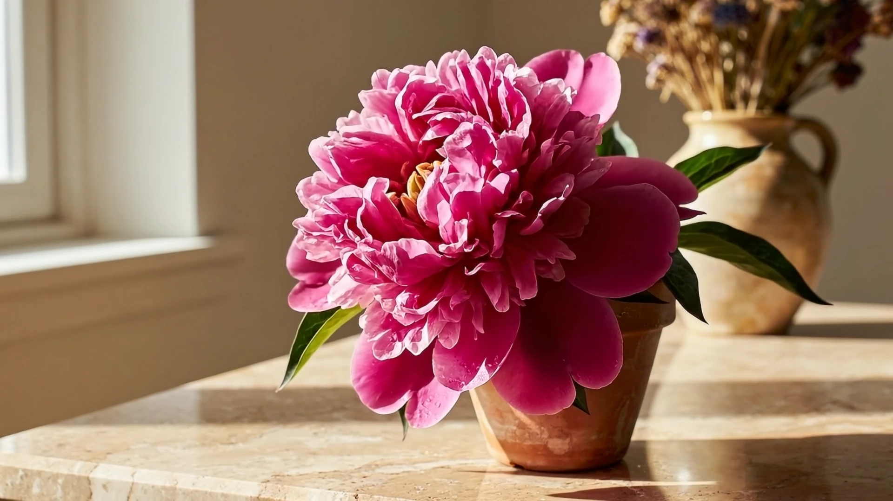
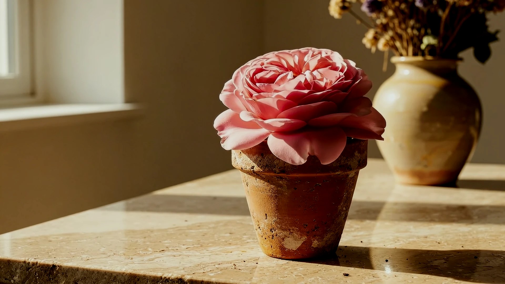
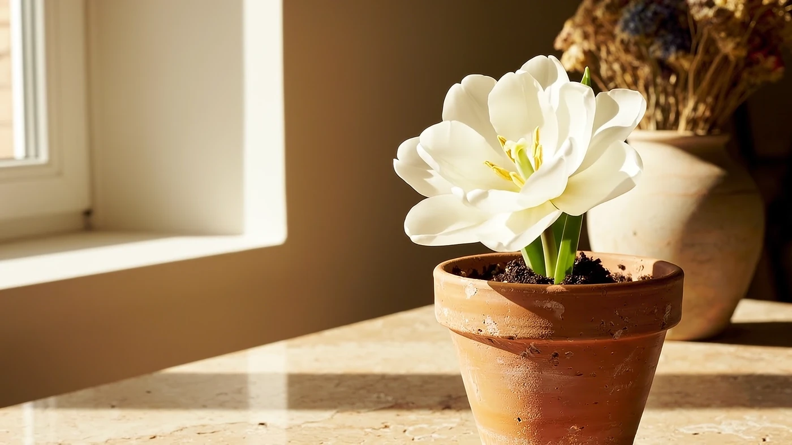

Действующий сайт DI Flowers. Тюльпан, пион и роза раскрываются на светлом фоне; конструктор букета считает состав прямо на странице.

Тот же движок, повёрнутый в ночь: приглушённые кадры, тёмное стекло карточек, акцент цвета розы. Характер магазина премиальных роз.

Третий характер: тёплый минимализм и ничего лишнего. Один сорт, один оттенок, чистая форма — тон магазина лимитированных букетов.